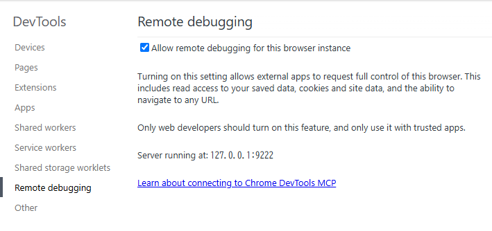

「範囲指定」と「全画面」について
アプリを開くと、右上に2つの撮影ボタンがあります。
- 範囲指定 — 自分でドラッグ(マウスを押したまま動かす)して選んだ部分だけを撮ります。「ここだけ撮りたい」という時に使います。
- 全画面 — 画面全体をそのまま撮ります。複数のモニターを使っている場合は、すべてのモニターをまとめて撮ります。
ボタンの代わりに、キーボードのショートカットも使えます。
撮り終わると、自動で真ん中のプレビュー(撮った画像を確認する場所)に表示されます。
プレビューはマウスホイールで拡大できます。拡大中は、Spaceを押しながら左ボタンでドラッグすると画像を移動できます。
マークアップについて
「ここに注目してほしい」「ここが間違っている」といったことを伝えたい時に使います。「マークアップ」タブを開いて使います。
- 四角形・丸・矢印・線ボタンを押してから、画像の上でドラッグすると描けます。
- 文字ボタンを押し、入力欄に文字を入れてから、置きたい場所をクリックします。
色・太さ・文字の大きさは、ボタンの下にある欄で変更できます。
トリミングについて
画像の余分な部分を取り除きたい時に使います。「トリミング」タブを開いて使います。
- Crop — 残したい部分をドラッグで選ぶと、それ以外の部分が切り取られます。
- 縦を消す(左右をつなぐ)/ 横を消す(上下をつなぐ) — 画像の中の帯状の部分だけを取り除いて、残りをつなぎ合わせます。長い画面をスクロールして撮ったけれど、途中の余分な部分だけ消したい、という時に便利です。
テキスト化について
写真の中の文字を、コピーできる文字に変換できます。「テキスト化」タブを開いただけでは読み取られず、「テキスト化：オフ」と書かれた四角いバッジをクリックする(「テキスト化：オン」に変わります)と読み取られます。読み取った文字は、そのままコピーしたり画像と一緒に保存したりできます。
テキスト化(マスク)
メールアドレスや名前など、他の人に見せたくない部分を黒く塗りつぶして隠したい時に使います。こちらも「テキスト化」タブの中の機能です。
- 「テキスト化：オフ」と書かれた四角いバッジをクリックする(「テキスト化：オン」に変わります)。
- 画像の中の文字が自動で四角い枠で囲まれる。
- 隠したい文字の枠をクリックすると、その部分が黒く塗りつぶされる。
- 枠になっていない部分も、マウスでドラッグすれば自由に塗りつぶせる。
Webキャプチャ
ChromeまたはEdgeで開いているページを、縦に長い範囲も含めて撮影できます。
- 「ページを検出」を押し、ブラウザーのリモートデバッグ設定画面を開きます。
-
Allow remote debugging for this browser instance にチェックを入れます。

チェックを入れる場所。ブラウザーのバージョンにより、設定画面の表示や文言が少し異なる場合があります。 - ScreenReadyへ戻り、「撮影するページ」から対象を選びます。
- 対象ブラウザーが最小化されている場合は、前面表示の確認に許可します。別のタブが表示されている場合は、選択したタブへ切り替わります。
- 「撮影」を押します。処理中の案内が閉じてプレビューへ表示されるまで待ちます。
保存・コピーについて
- 保存したい時 — 画面上部の保存先を確認し、保存ボタンを押します。初回は設定の「データの保存先」と同じ場所が使われ、あとから変更できます。
- どこかに貼り付けたい(コピーしたい)時 — プレビュー上部のコピーボタンを押すか、Ctrl+Cを押します。
「画像だけ」「文字だけ」「両方」のどれを保存・コピーするかも選べます。
履歴について
「履歴」タブでは、これまでに撮影・編集したものを一覧で見られます。撮った直後の「元データ」と、マスクや文字を書き足した後の「編集済み」の、両方が残っています。
設定について
「設定」タブでは、次のようなことができます。
- データの保存先 — アプリが内部で使う保存場所。分からなくなったら「既定に戻す」で元に戻せます。
- 言語 / Language — 日本語と英語の切り替え。切り替えると再起動の確認が出ます。
- 常駐 — ウィンドウを閉じても通知領域(タスクトレイ)にアプリが残るようにするかどうか。オンにしておくと、閉じていてもショートカットキーで撮影できます。
- 確認ダイアログ — 「すべて解除」のような元に戻しにくい操作の前に確認を出すかどうか。
- サポート — 取扱説明書、不具合・改善報告、OCR読取り結果の報告を開けます。
- 利用規約・プライバシーポリシー・クレジット(使用しているソフトの一覧)も、この画面から確認できます。
不具合・改善を報告する
設定のサポート欄から、一般報告またはOCR読取り結果の報告を開けます。内容を確認して同意を選び、「Gmailで下書きを開く」を押すと、宛先・件名・本文を入れたGmail画面が開き、報告データがクリップボードへコピーされます。
Gmail本文へ貼り付け、内容と宛先を確認して利用者自身が送信してください。ScreenReadyはログイン、画像添付、送信を自動実行しません。
よくある質問(FAQ)
Q. ウィンドウを切り替えたときなどに、画面に大きく「あ」や「A」と表示されたり、日本語入力と半角入力が勝手に切り替わったりします。ScreenReadyの不具合ですか?
A. いいえ、ScreenReady自体の不具合ではありません。これはWindows自体の仕様で、ScreenReadyに限らず、ブラウザなど他のアプリでもウィンドウを最小化して元に戻したり、他のアプリへ切り替えたりするだけで同じことが起こります。
ScreenReadyのプログラム側で確実に防ぐことは難しいため、対処方法としては次のいずれかになります。
- Windowsの言語設定を開き、この表示(通知)自体を非表示に設定してください。(表示に関する設定項目は、OSやバージョンによってお使いの環境ごとに異なりますので、表示されている設定内容に応じて対応してください。)
- 「あ」「A」の表示が消えるまで少し待ってから操作してください。